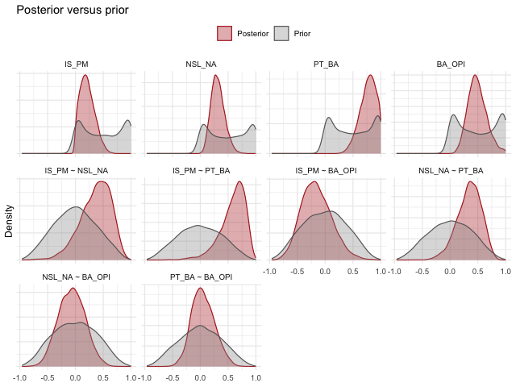
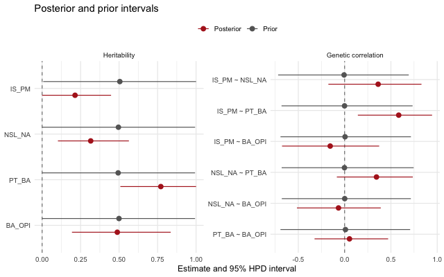
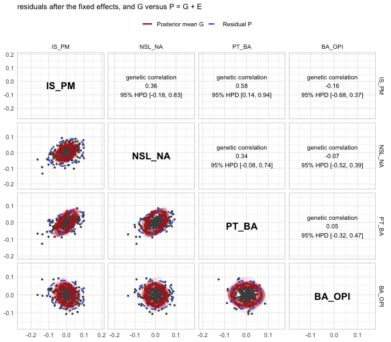
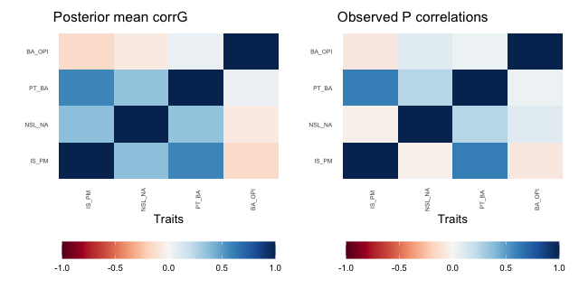

ratones_morpho ships with the package (Penna et
al. 2017): 35 cranial distances for 329 mice from five artificial
selection lines, with sex, age, generation and line. This vignette fits
four of the distances, with the relationship matrix built by
animal_design() from the dam and sire recorded on each
mouse, and then fits the same model in size and shape coordinates.
Data
dat <- ratones_morpho
table(dat$selection)
#>
#> control downwards upwards
#> 67 121 141Four distances spanning the skull, on the log scale as usual for morphometrics. The 35 distances are moderately integrated (one principal component explains about 40% of the variance), so a handful of them already carry a correlated genetic signal.
traits <- c("IS_PM", "NSL_NA", "PT_BA", "BA_OPI")
dat[traits] <- log(dat[traits])
round(cor(dat[traits]), 2)
#> IS_PM NSL_NA PT_BA BA_OPI
#> IS_PM 1.00 -0.04 0.61 -0.08
#> NSL_NA -0.04 1.00 0.25 0.10
#> PT_BA 0.61 0.25 1.00 0.04
#> BA_OPI -0.08 0.10 0.04 1.00animal_design() builds Y, X
and A in one call. The formula gives the fixed effects:
sex, age at death and selection line (the lines differ in body weight by
construction, so their means must be modelled).
pedigree = ped adds the relationship matrix. The rows of
ratones_morpho are named with the individual IDs, so the
pedigree is matched to the rows of Y automatically, and
parents without records are added as founders.
ped <- ratones_pedigree
design <- suppressWarnings(
animal_design(cbind(IS_PM, NSL_NA, PT_BA, BA_OPI) ~ SEX + AGE + LIN,
dat, pedigree = ped))
dim(design$Y)
#> [1] 329 4
colnames(design$X)
#> [1] "(Intercept)" "SEXM" "AGE" "LINhp" "LINs"
#> [6] "LINsp" "LINt"
dim(design$A)
#> [1] 329 329Fit
fit <- lmm_animal(design$Y, design$X, design$A, lkj_prior = 2,
iter = 3000, warmup = 1500, chains = 4, cores = 4,
refresh = 0, seed = 1)
#> Running MCMC with 4 parallel chains...
#> Chain 1 finished in 29.3 seconds.
#> Chain 4 finished in 30.7 seconds.
#> Chain 2 finished in 32.4 seconds.
#> Chain 3 finished in 37.9 seconds.
#>
#> All 4 chains finished successfully.
#> Mean chain execution time: 32.6 seconds.
#> Total execution time: 38.1 seconds.
fit$summary(c("h2", "sigma_G", "sigma_E", "corrG"))
#> # A tibble: 28 × 10
#> variable mean median sd mad q5 q95 rhat ess_bulk ess_tail
#> <chr> <dbl> <dbl> <dbl> <dbl> <dbl> <dbl> <dbl> <dbl> <dbl>
#> 1 h2[1] 0.214 0.200 0.129 0.136 0.0267 0.448 1.00 1683. 1736.
#> 2 h2[2] 0.316 0.307 0.120 0.119 0.132 0.531 1.00 2747. 3357.
#> 3 h2[3] 0.771 0.787 0.144 0.151 0.508 0.980 1.00 1613. 1362.
#> 4 h2[4] 0.488 0.474 0.165 0.162 0.238 0.785 1.00 2839. 1634.
#> 5 sigma_G… 0.0189 0.0190 0.00706 0.00700 0.00681 0.0303 1.00 1701. 1773.
#> 6 sigma_G… 0.0204 0.0203 0.00461 0.00447 0.0131 0.0282 1.00 2831. 3400.
#> 7 sigma_G… 0.0279 0.0281 0.00393 0.00409 0.0210 0.0339 1.00 1832. 2687.
#> 8 sigma_G… 0.0244 0.0241 0.00535 0.00507 0.0162 0.0339 1.00 2794. 1770.
#> 9 sigma_E… 0.0379 0.0381 0.00288 0.00285 0.0330 0.0424 1.00 2305. 3137.
#> 10 sigma_E… 0.0303 0.0304 0.00246 0.00234 0.0261 0.0342 1.00 3271. 3507.
#> # ℹ 18 more rows
fit$diagnostic_summary()
#> $num_divergent
#> [1] 0 0 0 0
#>
#> $num_max_treedepth
#> [1] 0 0 0 0
#>
#> $ebfmi
#> [1] 0.9044426 0.8073316 0.8905995 0.9236855The fixed effects, named after the columns of X:
beta_draws <- rename_beta(fit, "beta")
posterior::summarise_draws(beta_draws)
#> # A tibble: 28 × 10
#> variable mean median sd mad q5 q95 rhat ess_bulk
#> <chr> <dbl> <dbl> <dbl> <dbl> <dbl> <dbl> <dbl> <dbl>
#> 1 beta[1,(I… 1.42e+0 1.42e+0 1.41e-2 1.41e-2 1.40e+0 1.45e+0 1.00 3575.
#> 2 beta[2,(I… 2.10e+0 2.10e+0 1.29e-2 1.26e-2 2.08e+0 2.12e+0 1.00 3952.
#> 3 beta[3,(I… 2.36e+0 2.36e+0 1.19e-2 1.20e-2 2.34e+0 2.38e+0 1.00 2833.
#> 4 beta[4,(I… 1.43e+0 1.43e+0 1.26e-2 1.26e-2 1.41e+0 1.45e+0 1.00 4434.
#> 5 beta[1,SE… -4.16e-3 -4.23e-3 4.64e-3 4.68e-3 -1.17e-2 3.48e-3 1.00 6271.
#> 6 beta[2,SE… 6.59e-3 6.60e-3 3.84e-3 3.79e-3 1.84e-4 1.30e-2 1.00 7151.
#> 7 beta[3,SE… 2.70e-3 2.69e-3 2.90e-3 2.91e-3 -2.09e-3 7.46e-3 1.00 6337.
#> 8 beta[4,SE… -6.42e-3 -6.45e-3 3.43e-3 3.38e-3 -1.20e-2 -6.95e-4 1.000 8904.
#> 9 beta[1,AG… 5.13e-4 5.12e-4 8.08e-5 8.13e-5 3.84e-4 6.48e-4 1.000 6685.
#> 10 beta[2,AG… 5.18e-4 5.18e-4 6.88e-5 6.71e-5 4.03e-4 6.32e-4 1.00 7358.
#> # ℹ 18 more rows
#> # ℹ 1 more variable: ess_tail <dbl>The traits are log distances, so variances are small numbers; heritabilities and correlations are scale free and easier to read.
signif(draws_mean(fit, "G"), 2)
#> IS_PM NSL_NA PT_BA BA_OPI
#> IS_PM 4.1e-04 1.6e-04 3.4e-04 -8.7e-05
#> NSL_NA 1.6e-04 4.4e-04 2.1e-04 -3.3e-05
#> PT_BA 3.4e-04 2.1e-04 7.9e-04 2.5e-05
#> BA_OPI -8.7e-05 -3.3e-05 2.5e-05 6.3e-04
round(draws_mean(fit, "corrG"), 2)
#> IS_PM NSL_NA PT_BA BA_OPI
#> IS_PM 1.00 0.36 0.58 -0.16
#> NSL_NA 0.36 1.00 0.34 -0.07
#> PT_BA 0.58 0.34 1.00 0.05
#> BA_OPI -0.16 -0.07 0.05 1.00P = G + E is estimated after the fixed effects, so it is
smaller than the raw covariance of the traits, which also contains the
sex, age and line effects. It is close to the covariance of the
least-squares residuals:
signif(draws_mean(fit, "P"), 2)
#> IS_PM NSL_NA PT_BA BA_OPI
#> IS_PM 0.00190 5.0e-04 6.1e-04 -2.2e-04
#> NSL_NA 0.00050 1.4e-03 3.9e-04 -2.9e-05
#> PT_BA 0.00061 3.9e-04 1.0e-03 -5.8e-05
#> BA_OPI -0.00022 -2.9e-05 -5.8e-05 1.2e-03
signif(cov(residuals(lm(cbind(IS_PM, NSL_NA, PT_BA, BA_OPI) ~ SEX + AGE + LIN,
dat))), 2)
#> IS_PM NSL_NA PT_BA BA_OPI
#> IS_PM 0.00170 4.9e-04 0.00056 -2.1e-04
#> NSL_NA 0.00049 1.3e-03 0.00037 -3.5e-05
#> PT_BA 0.00056 3.7e-04 0.00080 -6.0e-05
#> BA_OPI -0.00021 -3.5e-05 -0.00006 1.1e-03Plots
Where the prior and the posterior overlap for h2 and
corrG, the data add little information.
plot_prior_posterior(fit, trait_names = traits, ncol = 4)
plot of chunk prior-posterior
plot_forest(fit, trait_names = traits)
plot of chunk forest
The residuals after the fixed effects, with posterior draws of the
G ellipses and the genetic correlations.
X = design$X removes the sex, age and line effects, so the
cloud and the dashed ellipse have roughly the covariance
P = G + E.
plot_G_ellipses(fit, design$Y, trait_names = traits, n_show = 100,
X = design$X)
plot of chunk ellipses
plot_corr(draws_mean(fit, "corrG"), "Posterior mean corrG") +
plot_corr(cor(dat[traits]), "Observed P correlations")
plot of chunk corr
The same model in size and shape coordinates
Size plus the three shape axes span the same space as the four
traits, so this is the same model in another parametrisation: same
number of traits, same X and A. The prior is
not invariant, though: the LKJ prior now acts on correlations between
size and shape rather than between the raw traits, and the shape axes
are principal components, so their correlations are expected to be
small. lkj_prior stays at 2 to keep the two fits
comparable.
ss <- size_shape(dat[traits], n_shape = length(traits) - 1L)
dat_ss <- cbind(dat, ss$scores)
design_ss <- suppressWarnings(
animal_design(cbind(size, shape1, shape2, shape3) ~ SEX + AGE + LIN,
dat_ss, pedigree = ped))
fit_ss <- lmm_animal(design_ss$Y, design_ss$X, design_ss$A, lkj_prior = 2,
iter = 3000, warmup = 1500, chains = 4, cores = 4,
refresh = 0, seed = 1)
#> Running MCMC with 4 parallel chains...
#> Chain 1 finished in 23.1 seconds.
#> Chain 2 finished in 23.6 seconds.
#> Chain 3 finished in 24.1 seconds.
#> Chain 4 finished in 24.9 seconds.
#>
#> All 4 chains finished successfully.
#> Mean chain execution time: 24.0 seconds.
#> Total execution time: 25.1 seconds.back_transform() maps every draw back to the measured
traits, returning G as a traits by traits by draws array
named after the traits.
post_ss <- back_transform(fit_ss, ss)
G_traits <- draws_mean(fit, "G")
G_size_shape <- draws_mean(post_ss, "G")
round(G_traits, 4)
#> IS_PM NSL_NA PT_BA BA_OPI
#> IS_PM 4e-04 2e-04 3e-04 -1e-04
#> NSL_NA 2e-04 4e-04 2e-04 0e+00
#> PT_BA 3e-04 2e-04 8e-04 0e+00
#> BA_OPI -1e-04 0e+00 0e+00 6e-04
round(G_size_shape, 4)
#> IS_PM NSL_NA PT_BA BA_OPI
#> IS_PM 4e-04 3e-04 3e-04 0e+00
#> NSL_NA 3e-04 5e-04 2e-04 0e+00
#> PT_BA 3e-04 2e-04 7e-04 1e-04
#> BA_OPI 0e+00 0e+00 1e-04 6e-04
# largest difference, relative to the largest element of G
round(max(abs(G_traits - G_size_shape)) / max(abs(G_traits)), 3)
#> [1] 0.167The two fits are to linear maps of the same data, so
fit_loo() can compare them on the trait scale once it is
told the transformation:
loo::loo_compare(list(raw = fit_loo(fit),
size_shape = fit_loo(fit_ss, transform = ss)))
#> model elpd_diff se_diff p_worse diag_diff diag_elpd
#> raw 0.0 0.0 NA
#> size_shape -1.3 1.6 0.79 |elpd_diff| < 4
#>
#> Diagnostic flags present.
#> See ?`loo-glossary` (sections `diag_diff` and `diag_elpd`)
#> or https://mc-stan.org/loo/reference/loo-glossary.html.The difference is well inside two standard errors, so the data do not prefer one parametrisation: they are the same model under slightly different priors.